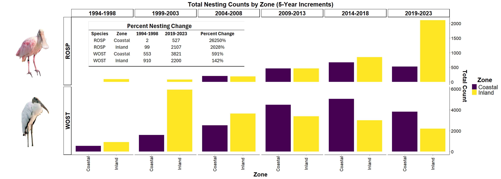
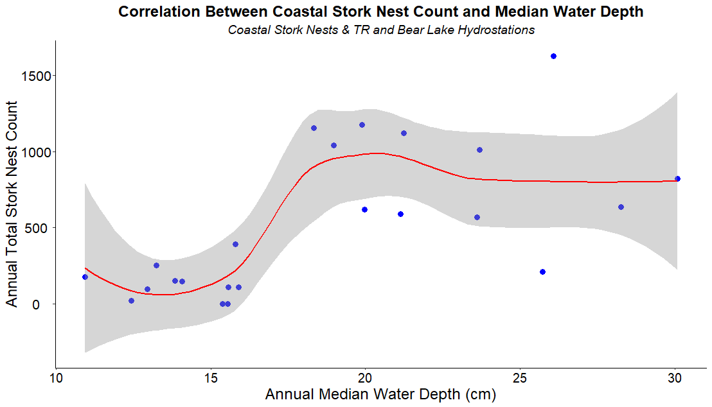
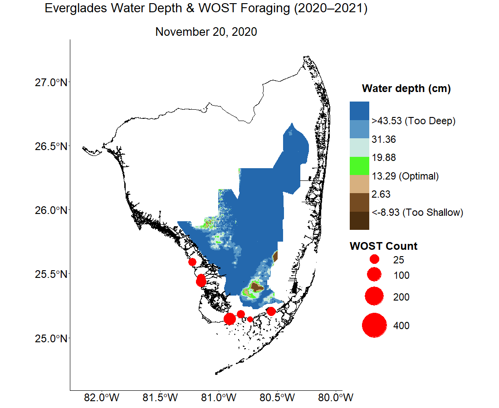

Everglades Wading Bird Foraging & Nesting Trends

Project Overview
In this project, I analyzed over 30 years of nesting data to investigate long-term trends in wood stork and roseate spoonbill populations across the Greater Everglades Ecosystem. Partnering with agencies including Everglades National Park, South Florida Water Management District, Audubon Florida, and the University of Florida, I compiled and cleaned data from multiple sources to assess how nest counts and locations have changed over time.
Using statistical modeling and spatial analysis in RStudio and GIS, I examined the influence of hydrologic change and restoration efforts on nesting behavior and distribution. The results shed light on how these indicator species are responding to shifting environmental conditions and help predict how future restoration may shape their recovery.
Background
Roseate Spoonbills and Wood Storks historically nested along the coastlines of Everglades National Park and Florida Bay, relying on seasonal hydrology to support predictable foraging conditions. However, urbanization and disrupted freshwater flows have pushed both species inland over recent decades, signaling major ecological shifts in the Everglades.
With large-scale restoration efforts underway since the early 2000s to reestablish more natural water patterns, this study examines whether nesting and foraging trends in these indicator species reflect a return to historical coastal use. Understanding how and where these birds are responding helps evaluate the effectiveness of restoration in rebalancing ecosystem function across the Greater Everglades.
Objective
The primary objective of this study was to evaluate long-term nesting and foraging trends of Roseate Spoonbills and Wood Storks in the Greater Everglades to better understand how restoration efforts are influencing their behavior and habitat use. Specifically, the analysis aimed to:
- Identify how nesting locations and counts have shifted over the past 30 years
- Assess changes in foraging distribution across time and space
- Determine the key hydrologic drivers of coastal nesting trends, including recession rates, hydroperiod, depth at the start of the nesting season, and rainfall in both the current and antecedent years
- Evaluate whether restoration initiatives are contributing to a return to historic coastal nesting behavior
These findings help assess the effectiveness of restoration strategies and inform future ecological management decisions.
Results Summary
Nesting Count and Location Trends
Analysis of long-term nesting data revealed that wading bird locations and counts have shifted over the past 30 years, with wood storks returning to historic coastal colonies, suggesting restoration is supporting their recovery. In contrast, roseate spoonbills are nesting further inland, not necessarily signaling restoration failure but instead reflecting a potential new baseline as sea level rise makes traditional bay foraging areas too deep.

Water depth & Nest Count correlation
Correlation analysis examining the relationship between coastal water depth and wood stork nesting revealed that when annual median depths exceeded 18 cm, above-average nesting was consistently observed. This provides managers with a preliminary understanding of how hydrologic conditions may influence colony success in the coastal Everglades.

Geographic Insights
An animated GIF illustrates the habitat use and foraging locations of wood storks across the Everglades ecosystem. It highlights how water depths must be high and then gradually recede throughout the system to sustain suitable habitat and prey availability from pre-nesting foraging through fledging. This past year represented a particularly strong season for nesting success in the Everglades.
